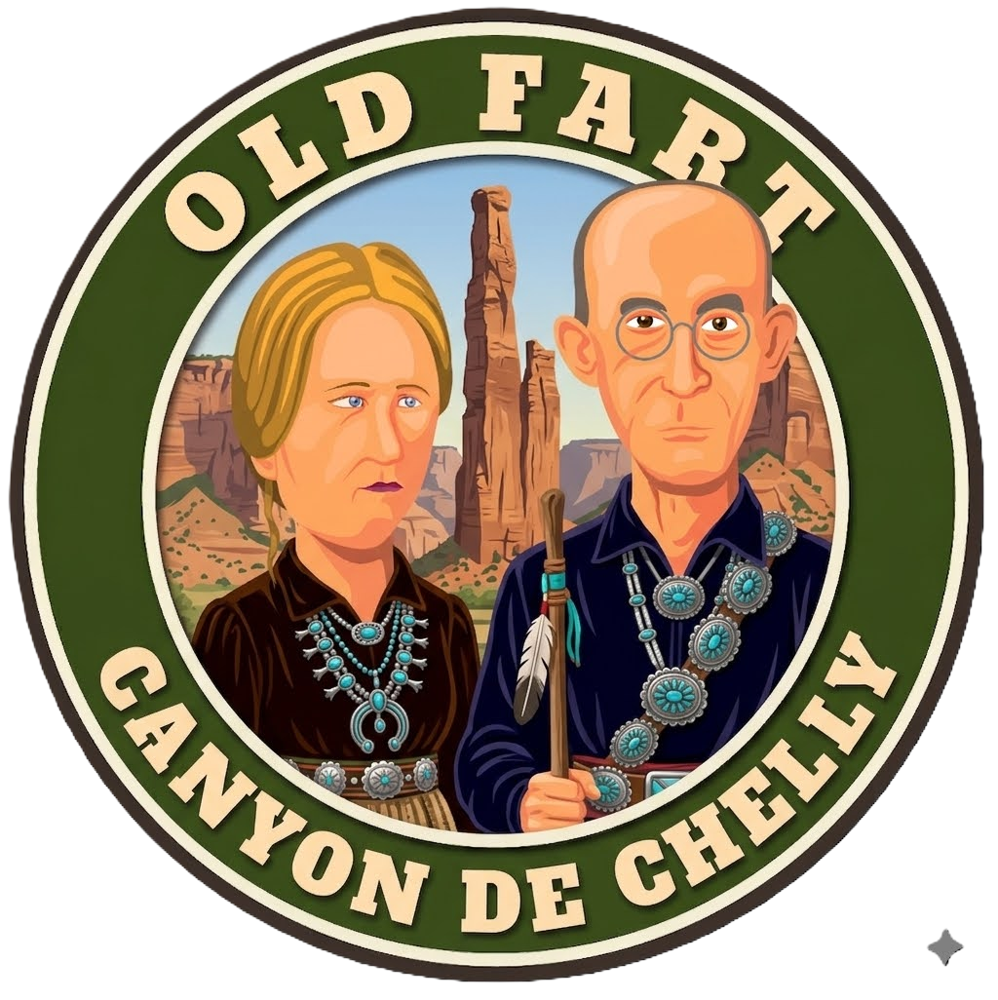
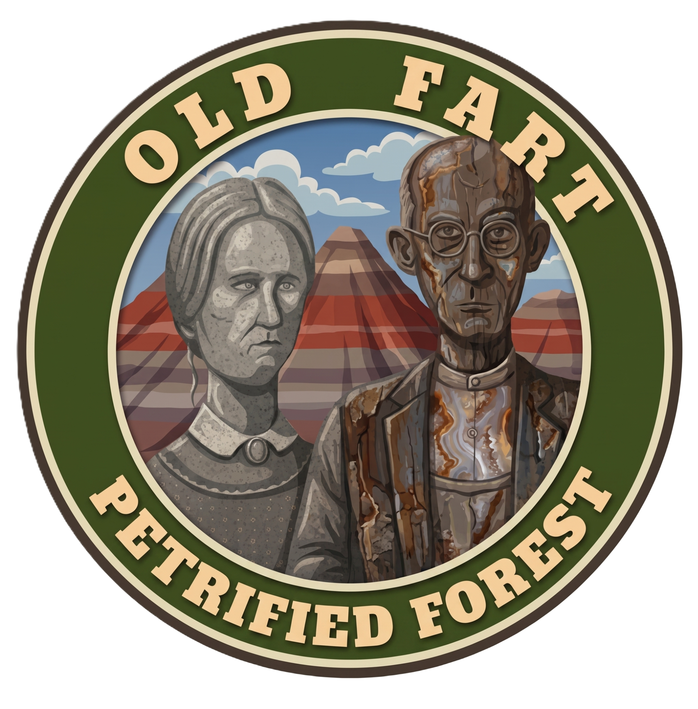
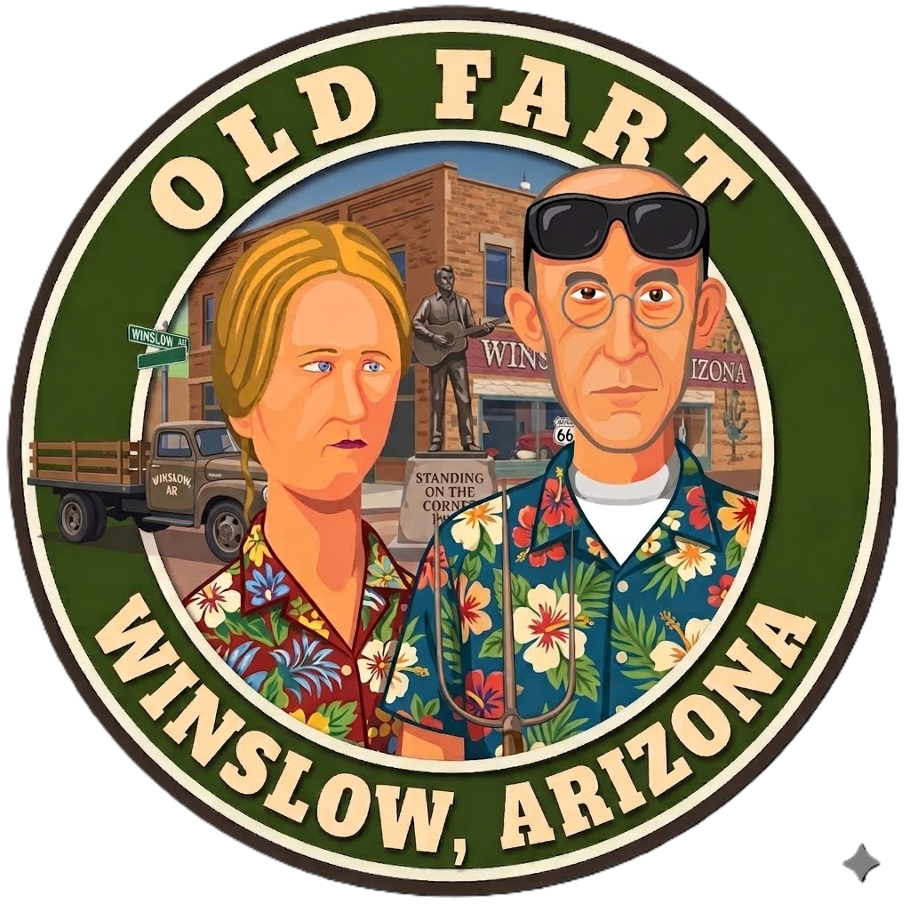
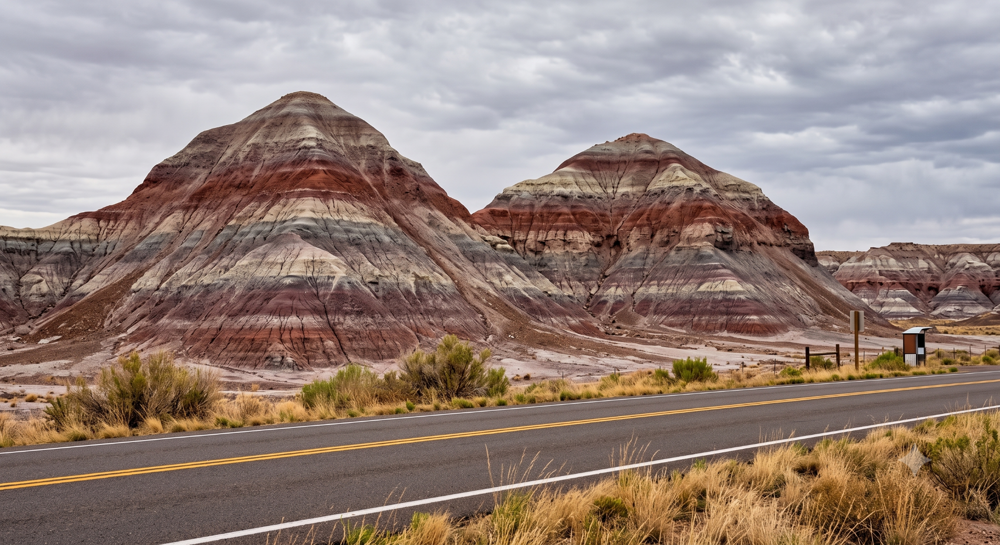
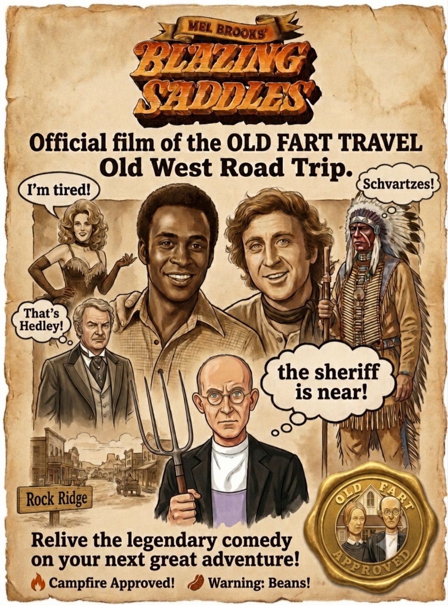

🥞 Breakfast
Junction Restaurant or on your own.
🥞 Breakfast Menu
Canyon de Chelly → Petrified Forest → Winslow → Sedona • Monday, August 3, 2026

Keep your phone—or actual camera—within easy reach.
It'll be in for another workout today as we visit one of Arizona's great (if not Grand) canyons, go palette-picking through the Painted Desert, and cap the day with an Eagle-eyed photo opportunity.
Another day of spectacular scenery awaits... before a well-earned Sedona snooze.
Diné (Navajo) families continue to raise livestock, farm, and make their homes here, just as their ancestors have for nearly 5,000 years. After gathering maps at the Visitor Center, we'll drive the North and South Rim Drives, stopping at overlooks with spectacular views into the canyon.
Bring your camera. The colors almost don't look real.

“...a fine sight to see, my Lord.”
Eagles fans... you know the rest.


Junction Restaurant or on your own.
🥞 Breakfast MenuWinslow, Arizona
An early dinner in town keeps us from racing Sedona's closing clocks.
🍽️ Winslow RestaurantsSedona, Arizona
Time to settle in, find the patio couches, and let Sedona slow the trip down.
🏨 Hotel WebsiteEating dinner in Winslow before heading to Sedona saves us from racing to our destination before they roll up the sidewalks for the night.
Sometimes the smartest travel decision... is simply eating at the right time.

We slow down.
Eat an omelet. Mosey Uptown. Cool off in the pool.
And remember that vacations aren't supposed to feel like work.
These road trips only work because you put your faith in me to lead you to fun places.
I still haven't decided which I enjoy more...
Planning the adventure... or watching you bring it to life.
Thank you for trusting me. Enjoy the ride.